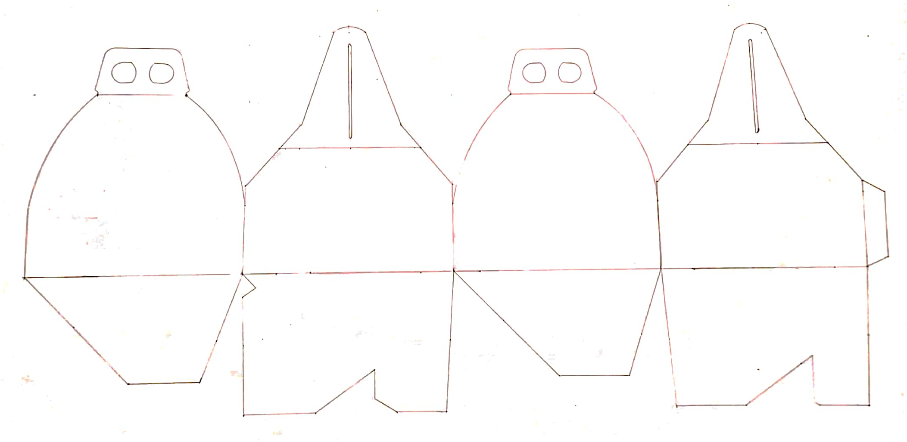
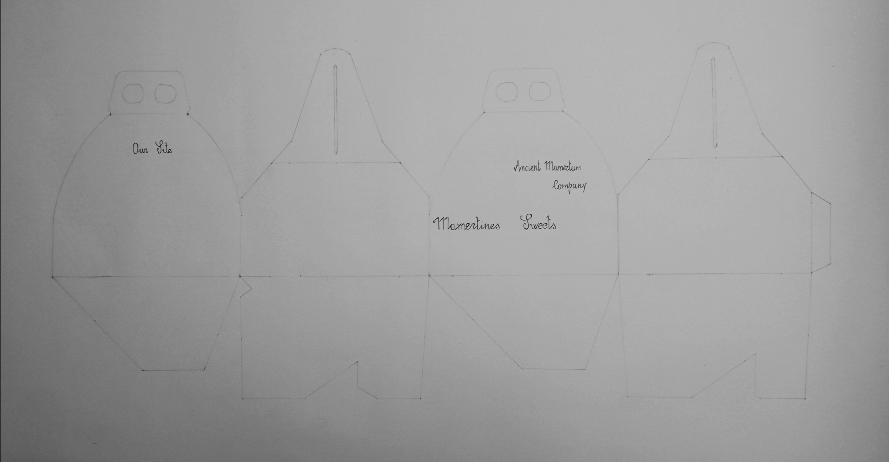

blank net of Mamertines Sweets package
final net of the package
My grandfather used to say that in Calabria in the early 1900s up to the 1970s, newlyweds on their wedding day used to give their guests a gift of a glove to take home containing almond sweets, chocolates and sugared almonds as a symbol of the sweetness that would accompany their future lives, and also so that some relatives who had not attended the wedding could stay at home and enjoy the wedding sweets. A tradition that had fallen into disuse but was recently revived in order to revalue ancient customs